Afficher le code
import pandas as pd
import numpy as np
import matplotlib.pyplot as plt
import seaborn as sns
from scipy.interpolate import interp1d, CubicSpline
from tabulate import tabulate
from scipy.stats import normENSAI 3A : DATA SCIENCE ET GESTION DES RISQUES
Le tableau de l’énoncé (courbe de taux de marché) décrit une courbe de taux interbancaires. En effet, les instruments qu’il contient, et desquels on derivera nos taux zero coupons pour differentes maturités, sont essentiellement des taux de marché monétaire (money market), des contrats futures et des swaps.
Ce tableau contient trois types d’instruments financiers:
Des Money market : Il s’agit des taux (monétaires) à court terme sur le marché interbancaire. Dans le contexte de notre exercice, il s’agit de taux Libor pour les maturités allant de 3 mois à 1 an.
Des contrats futures de taux d’intérêt :Ce sont des instruments financiers négociés sur un marché réglementé, permettant aux acteurs du marché de s’engager dès aujourd’hui sur l’évolution d’un taux d’intérêt futur à un niveau prédéfini. Ils sont utilisés aussi bien à des fins de couverture contre le risque de taux que pour la spéculation. Afin de limiter le risque de contrepartie, ces contrats sont sujets à des appels de marge quotidiens. La courbe de taux de marché présente des futures de taux d’intérêt avec des maturités comprises entre 1.25 et 2.75 ans.
Des swaps de taux d’intérêts: Un swap de taux d’intérêt est un contrat entre deux parties visant à échanger des flux financiers basés sur un montant notionnel déterminé. Généralement, l’une des parties verse des paiements à taux fixe, tandis que l’autre paie des intérêts à taux variable, indexés sur un indice de référence (dans notre cas, le Libor). Cet échange suit un échéancier prédéfini et permet aux acteurs du marché de se couvrir contre le risque de taux d’intérêt ou d’optimiser leurs coûts de financement. La courbe de taux de marché contient des Swaps dont les tenors vont de 3 à 30 ans \end{itemize}
Sous l’hypothèse d’absence d’opportunuité d’arbitrage ces instruments sont valorisés par les formules suivantes:
Money Market (Taux libor): Etant donné une période d’intérêt \([T, T+\delta]\), la valeur du tau libor vu aujourd’hui est donnée par \[ \begin{equation} L_0(T,T+\delta) = \frac{1}{\delta} \left( \frac{B(0,T)}{B(0,T + \delta)} - 1 \right) \end{equation} \]
La valeur vue d’aujourd’hui du future de taux d’intérêt pour la date de départ \(T\) et de tenor \(T+\delta\) est donnée par: \[ \begin{equation} F(0,T, T+\delta) = 1 - L_0(T,T+\delta) \end{equation} \]
Etant donné les échéanciers $(t_i)_{i=0,…,m} $(pour la jambe fixe) et \((t_j)_{j=0,...,n}\) (pour la jambe flottante), on définit le swap à départ \(T_0 = t_0 = \tilde{t}_0\) et de maturité \(T_n = t_m = \tilde{t}_n\). On introduit les nominaux respectifs de chaque jambe \((N_i)_{i=1,...,m}\) et \(( \tilde{N})_{j=1,...,n}\) ainsi que les taux fixes \((K_i)_{i=1,...,m}\) et les spreads \((s_i)_{i=1,...,m}\).
A la date de pricing t = 0, le prix du swap est donnée par:
\[ \begin{equation} S_0(T_0, T) = \frac{\sum_j^n \tilde{N}_j(\tilde{t}_j - \tilde{t}_{j-1})(L(\tilde{t}_{j-1}, \tilde{t}_j) + s_j)B(0, \tilde{t}_j)}{\sum_i^m N_i(t_i-t_{i-1})B(0,t_i)} \end{equation} \]
Rappelons le principe du bootstrapping et son importance.
Le principe de base du bootstrapping est de restituer - à partir de l’information disponible sur le marché - une courbe de taux zéro-coupon discrète à l’aide d’une approche récursive.
Cette méthode est essentielle car il n’existe pas sur le marché un continuum de cotations d’obligations zéro-coupon; ceci rend impossible l’obtention directe des taux zéro-coupon pour toutes les maturités. Le bootstraping constitue donc un outil indispensable pour la construction de la courbe des taux zéro-coupon par terme, qui est la brique fondamentale pour la valorisation des instruments financiers.
Rappelons la différence entre une opération forward et future.
La différence entre un contrat forward et un contrat future réside principalement dans leur mode de négociation et de règlement. Un forward est un contrat de gré à gré, réglé en un unique paiement à l’échéance, correspondant à la différence entre le taux négocié et le taux de marché réalisé. À l’inverse, un future est standardisé et négocié sur un marché réglementé, avec un ajustement quotidien de sa valeur via des appels de marge (mark-to-market), répartissant ainsi les gains et pertes tout au long de la durée du contrat.
L’interpolation des taux de swap pour obtenir des cotations annuelles simplifie la méthode du bootstrap en fournissant une courbe de taux continue pour toutes les maturités. Cela aligne les échéances des instruments de marché avec celles utilisées dans la construction de la courbe zéro-coupon, évitant ainsi de gérer des échéances intermédiaires ou irrégulières. Avec des intervalles de temps constants égaux à 1 an, les calculs deviennent plus simples et plus directs, permettant une extraction précise des taux zéro-coupon à chaque étape.
Construisons sur le segment des SWAP une nouvelle courbe de taux de marché avec des cotations annuelles obtenues à l’aide d’une méthode d’interpolation par spline.
| Market | MAT | MKT | |
|---|---|---|---|
| 0 | MM | 0.25 | 0.030698 |
| 1 | MM | 0.50 | 0.026191 |
| 2 | MM | 0.75 | 0.023958 |
| 3 | MM | 1.00 | 0.022979 |
| 4 | FUT | 1.25 | 0.978691 |
def interpolation_spline_swap(df):
df_swap = df[df["Market"] == 'SWAP']
# Appliquons une interpolation spline cubique
cs = CubicSpline(df_swap['MAT'].values, df_swap['MKT'].values)
# générons les points pour l'affichage de la courbe
maturities_gen = np.linspace(min(df_swap['MAT'].values), max(df_swap['MAT'].values), 100)
swap_rate_gen = cs(maturities_gen)
data_gen = {
"Market": ['SWAP'] * len(maturities_gen),
'MAT': maturities_gen.tolist(),
'MKT': swap_rate_gen.tolist()
}
data_gen = pd.DataFrame(data_gen)
return data_gendata_swap = interpolation_spline_swap(df)
plt.plot(data_swap['MAT'].values,data_swap['MKT'].values, label ="Coutbe de taux swap interpolés")
plt.scatter(df[df["Market"]== "SWAP"]['MAT'].values,df[df["Market"]== "SWAP"]['MKT'].values,color = "red", label = "Taux swap", zorder =3)
plt.title("Courbe des taux swap de marché avec interpolation cubique")
plt.xlabel("Maturité (années)") # Axe des abscisses
plt.ylabel("Taux (%)")
plt.legend()
plt.show()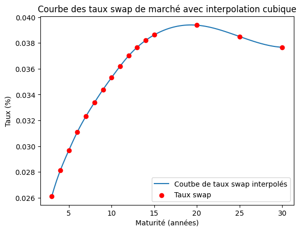
Dans la suite, on supposera que pour ce segment, cette nouvelle courbe est la courbe de marché de référence
Calculons à présent les taux zéro-coupon continus associés à toutes les maturités de marché.
En appliquant le principe de bootstrap, les expressions énoncées en (1), (2), (3) , nous permettent d’obtenir de manière recursive les prix d’obligations zero coupons pour differentes maturités à partir des taux de marché.
Des prix de ces obligations zéro-coupons, on déduit le taux zéro-coupon par le calcul suivant :
\[ B(0, T) = \exp(-R(0,T) \cdot T) \implies R(0,T) = -\frac{\ln(B(0,T))}{T} \]
def bootstrap_yield_curve(df):
"""
Bootstrap a yield curve from market data using cubic spline interpolation.
Parameters:
df (pd.DataFrame): Market data with columns ["Market", "MAT", "MKT"].
Returns:
pd.DataFrame: Yield curve with zero-coupon rates.
"""
# Convert DataFrame into dictionary for faster lookup
data = {market: df[df["Market"] == market].reset_index(drop=True) for market in ["MM", "FUT", "SWAP"]}
# Step 1: Interpolate Swap Rates
swap_data = data["SWAP"]
spline = CubicSpline(swap_data["MAT"], swap_data["MKT"])
maturities_annual = np.arange(3, 31, 1)
interpolated_rates = spline(maturities_annual)
# Combine interpolated data
SWAP_interpolated = pd.DataFrame({"Market": "SWAP", "MAT": maturities_annual, "MKT": interpolated_rates})
df_new = pd.concat([df[df["Market"] != "SWAP"], SWAP_interpolated])
# Update data dictionary
data["MM"] = df_new[df_new["Market"] == "MM"].reset_index(drop=True)
data["FUT"] = df_new[df_new["Market"] == "FUT"].reset_index(drop=True)
data["SWAP"] = df_new[df_new["Market"] == "SWAP"].reset_index(drop=True)
# Step 2: Compute Zero-Coupon Rates for MM
data["MM"]["B(0,MAT)"] = 1 / (1 + data["MM"]["MAT"] * data["MM"]["MKT"])
data["MM"]["tx ZC"] = -np.log(data["MM"]["B(0,MAT)"]) / data["MM"]["MAT"]
# Step 3: Compute Zero-Coupon Rates for Futures
data["FUT"]["B(0,MAT)"] = data["MM"]["B(0,MAT)"].iloc[-1]
B_tau_i = data["FUT"].iloc[0]["B(0,MAT)"]
tau_i = 1
for i, row in data["FUT"].iterrows():
T_i, f_i = row["MAT"], row["MKT"]
B_tau_i /= (1 + (T_i - tau_i) * (1 - f_i))
data["FUT"].at[i, "B(0,MAT)"] = B_tau_i
tau_i = T_i
data["FUT"]["tx ZC"] = -np.log(data["FUT"]["B(0,MAT)"]) / data["FUT"]["MAT"]
# Step 4: Compute Zero-Coupon Rates for Swaps
B_T_1 = data["MM"].loc[data["MM"]["MAT"] == 1, "B(0,MAT)"].values[0]
B_T_2 = data["FUT"].loc[data["FUT"]["MAT"] == 2, "B(0,MAT)"].values[0]
A = B_T_1 + B_T_2
data["SWAP"]["B(0,MAT)"] = (1 - data["SWAP"]["MKT"].iloc[0] * A) / (1 + data["SWAP"]["MKT"].iloc[0])
for i in range(1, len(data["SWAP"])):
A += data["SWAP"].iloc[i - 1]["B(0,MAT)"]
data["SWAP"].at[i, "B(0,MAT)"] = (1 - data["SWAP"].iloc[i]["MKT"] * A) / (1 + data["SWAP"].iloc[i]["MKT"])
data["SWAP"]["tx ZC"] = -np.log(data["SWAP"]["B(0,MAT)"]) / data["SWAP"]["MAT"]
# Combine results
yield_curve = pd.concat(data.values())
return yield_curveL’application de la méthode de Bootstrapping à la courbe de marché permet d’obtenir les taux zéro-coupons ci-après présentés.
| Market | MAT | MKT | B(0,MAT) | tx ZC | |
|---|---|---|---|---|---|
| 0 | MM | 0.25 | 0.030698 | 0.992384 | 0.030581 |
| 1 | MM | 0.50 | 0.026191 | 0.987074 | 0.026021 |
| 2 | MM | 0.75 | 0.023958 | 0.982349 | 0.023745 |
| 3 | MM | 1.00 | 0.022979 | 0.977537 | 0.022719 |
| 0 | FUT | 1.25 | 0.978691 | 0.972357 | 0.022426 |
| 1 | FUT | 1.50 | 0.977094 | 0.966821 | 0.022495 |
| 2 | FUT | 1.75 | 0.974981 | 0.960811 | 0.022844 |
| 3 | FUT | 2.00 | 0.972911 | 0.954348 | 0.023363 |
| 4 | FUT | 2.25 | 0.970984 | 0.947475 | 0.023980 |
| 5 | FUT | 2.50 | 0.969711 | 0.940355 | 0.024599 |
| 6 | FUT | 2.75 | 0.968436 | 0.932992 | 0.025221 |
| 0 | SWAP | 3.00 | 0.026112 | 0.925392 | 0.025846 |
| 1 | SWAP | 4.00 | 0.028117 | 0.894510 | 0.027870 |
| 2 | SWAP | 5.00 | 0.029680 | 0.863031 | 0.029461 |
| 3 | SWAP | 6.00 | 0.031107 | 0.830611 | 0.030932 |
| 4 | SWAP | 7.00 | 0.032313 | 0.798250 | 0.032190 |
| 5 | SWAP | 8.00 | 0.033382 | 0.766005 | 0.033321 |
| 6 | SWAP | 9.00 | 0.034385 | 0.733744 | 0.034400 |
| 7 | SWAP | 10.00 | 0.035312 | 0.701779 | 0.035414 |
| 8 | SWAP | 11.00 | 0.036197 | 0.670056 | 0.036399 |
| 9 | SWAP | 12.00 | 0.037003 | 0.639058 | 0.037313 |
| 10 | SWAP | 13.00 | 0.037668 | 0.609615 | 0.038071 |
| 11 | SWAP | 14.00 | 0.038201 | 0.581859 | 0.038681 |
| 12 | SWAP | 15.00 | 0.038624 | 0.555759 | 0.039161 |
| 13 | SWAP | 16.00 | 0.038950 | 0.531317 | 0.039525 |
| 14 | SWAP | 17.00 | 0.039184 | 0.508571 | 0.039774 |
| 15 | SWAP | 18.00 | 0.039331 | 0.487555 | 0.039908 |
| 16 | SWAP | 19.00 | 0.039395 | 0.468277 | 0.039931 |
| 17 | SWAP | 20.00 | 0.039380 | 0.450732 | 0.039844 |
| 18 | SWAP | 21.00 | 0.039292 | 0.434869 | 0.039653 |
| 19 | SWAP | 22.00 | 0.039145 | 0.420521 | 0.039376 |
| 20 | SWAP | 23.00 | 0.038954 | 0.407474 | 0.039034 |
| 21 | SWAP | 24.00 | 0.038734 | 0.395495 | 0.038651 |
| 22 | SWAP | 25.00 | 0.038501 | 0.384336 | 0.038250 |
| 23 | SWAP | 26.00 | 0.038270 | 0.373731 | 0.037855 |
| 24 | SWAP | 27.00 | 0.038056 | 0.363408 | 0.037490 |
| 25 | SWAP | 28.00 | 0.037874 | 0.353080 | 0.037181 |
| 26 | SWAP | 29.00 | 0.037739 | 0.342452 | 0.036952 |
| 27 | SWAP | 30.00 | 0.037668 | 0.331225 | 0.036832 |
# Fonction pour appliquer le stripping
def zc_interpolation(yield_curve):
"""
Calcule les taux forward 3M à partir des taux zéro-coupon.
Parameters:
yield_curve (pd.DataFrame): Contient 'MAT' (maturité) et 'B(0,MAT)' (Prix ZC).
Returns:
pd.DataFrame: Contenant 'MAT' et 'Forward 3M'.
"""
# Convertir les maturités en mois
yield_curve["MAT_months"] = yield_curve["MAT"] * 12
# Sélection des maturités tous les 3 mois
maturities = np.arange(3, max(yield_curve["MAT_months"]), 3) / 12 # en années
#%%%%%%%%%%%%%%%%%%%%%%%%%%%%%%%%%
# Interpolation log-linéaire sur B(0,T) pour estimer tx ZC pour ces maturités
temp = interp1d(yield_curve["MAT"], np.log(yield_curve["B(0,MAT)"]), kind="linear", fill_value="extrapolate")
log_interp_zc = -np.log(temp(maturities)) / maturities
#%%%%%%%%%%%%%%%%%%%%%%%%%%%%%%%%%
# Interpolation linéaire sur les tx ZC
temp = interp1d(yield_curve["MAT"], yield_curve["tx ZC"], kind="linear", fill_value="extrapolate")
lin_interp_zc = temp(maturities)
#%%%%%%%%%%%%%%%%%%%%%%%%%%%%%%%
# Interpolation cubic des tx ZC pour estimer B(0,T) pour ces maturités
temp = CubicSpline(yield_curve["MAT"], yield_curve["tx ZC"])
spline_interp_zc = temp(maturities)
return {"MAT": maturities,
"Interpolation Linéaire": lin_interp_zc,
"Interpolation log-linéaire": log_interp_zc,
"Interpolation Spline": spline_interp_zc}
def plot_curve(forward_rates, columns = ["Interpolation Spline", "Interpolation Linéaire"], title= "Courbe des Taux Forwards 3M"):
"""
Trace la courbe des taux forwards en utilisant l'interpolation linéaire et spline.
Parameters:
forward_rates (pd.DataFrame): Contenant 'MAT' et 'Forward 3M'.
"""
# Tracé des courbes
plt.figure(figsize=(10, 6))
for col in columns:
plt.plot(forward_rates["MAT"], forward_rates[col], label=col)
plt.xlabel("Maturité (années)")
plt.ylabel("Taux d'intérêt")
plt.title(f"{title}")
plt.legend()
plt.grid()
plt.show()Stripping
Nous utilisons trois méthodes pour réaliser l’interpolation de la courbe discrète des taux zéro-coupon obtenue via le bootstrapping précédent.
Une interpolation linéaire par morceaux (taux zéro-coupon): l’hypothèse est que la fonction \(R(0,T)\) est linéaire entre deux maturités successives \(T_{i-1}\) et $T_i $ :
\[ R(0,T) = \lambda_i(T) R(0,T_i) + (1 - \lambda_i(T)) R(0,T_{i-1}), \quad \text{pour } T \in [T_{i-1}, T_i] \]
avec :
\[ \lambda_i(T) = \frac{T - T_{i-1}}{T_i - T_{i-1}} \]
Une interpolation log-linéaire par morceaux (prix des obligations zéro-coupon): on suppose que la fonction ( B(0,T) ) est log-linéaire par morceaux
\[ R(0,T) \cdot T = \lambda_i(T) R(0,T_i) T_i + (1 - \lambda_i(T)) R(0,T_{i-1}) T_{i-1}, \quad \text{pour } T \in [T_{i-1}, T_i] \]
où \(\lambda_i(T)\) est défini comme précédemment.
Une interpolation par spline cubique
Pour ces trois méthodes, la courbe de taux interpolée a le même allure comme illustrée ci-après.
C:\Users\DEBA\AppData\Local\Temp\ipykernel_24500\3189026096.py:23: RuntimeWarning: invalid value encountered in log
log_interp_zc = -np.log(temp(maturities)) / maturities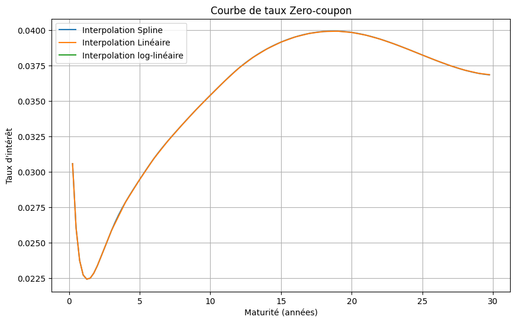
Le graphique ci après présente les courbes de taux forward 3 mois obtenue en fonction des différentes méthodes d’interpolation.
# Courbe des taux forward de tenor 3 mois
def compute_forward_rates(yield_curve):
"""
Calcule les taux forward 3M à partir des taux zéro-coupon.
Parameters:
yield_curve (pd.DataFrame): Contient 'MAT' (maturité) et 'B(0,MAT)' (Prix ZC).
Returns:
pd.DataFrame: Contenant 'MAT' et 'Forward 3M'.
"""
# Convertir les maturités en mois
yield_curve["MAT_months"] = yield_curve["MAT"] * 12
# Sélection des maturités tous les 3 mois
maturities = np.arange(3, max(yield_curve["MAT_months"]), 3) / 12 # en années
#%%%%%%%%%%%%%%%%%%%%%%%%%%%%%%%%%
# Interpolation log-linéaire sur B(0,T) pour estimer B(0,T) pour ces maturités
log_interp_bond_prices = interp1d(yield_curve["MAT"], np.log(yield_curve["B(0,MAT)"]), kind="linear", fill_value="extrapolate")
# Calcul des prix interpolés
B_t = np.exp(log_interp_bond_prices(maturities))
B_t_3M = np.exp(log_interp_bond_prices(maturities + 0.25)) # 3 mois plus tard
# Calcul du taux forward 3M
forward_rates_log = ((B_t / B_t_3M) - 1)/0.25
#%%%%%%%%%%%%%%%%%%%%%%%%%%%%%%%%%
# Interpolation linéaire sur les tx ZC pour estimer B(0,T) pour ces maturités
lin_interp_bond_prices = interp1d(yield_curve["MAT"], yield_curve["tx ZC"], kind="linear", fill_value="extrapolate")
# Calcul des prix interpolés
B_t = np.exp(-lin_interp_bond_prices(maturities)*maturities)
B_t_3M = np.exp(-lin_interp_bond_prices(maturities + 0.25)*(maturities + 0.25)) # 3 mois plus tard
# Calcul du taux forward 3M
forward_rates_lin = ((B_t / B_t_3M) - 1)/0.25
#%%%%%%%%%%%%%%%%%%%%%%%%%%%%%%%
# Interpolation cubic des tx ZC pour estimer B(0,T) pour ces maturités
spline_interp_bond_prices = CubicSpline(yield_curve["MAT"], yield_curve["tx ZC"])
# Calcul des prix interpolés
B_t = np.exp(-spline_interp_bond_prices(maturities)*maturities)
B_t_3M = np.exp(-spline_interp_bond_prices(maturities + 0.25)*(maturities + 0.25)) # 3 mois plus tard
# Calcul du taux forward 3M
forward_rates_spline = ((B_t / B_t_3M) - 1)/0.25
return {"MAT": maturities,
"Interpolation Linéaire": forward_rates_lin,
"Interpolation log-linéaire": forward_rates_log,
"Interpolation Spline": forward_rates_spline}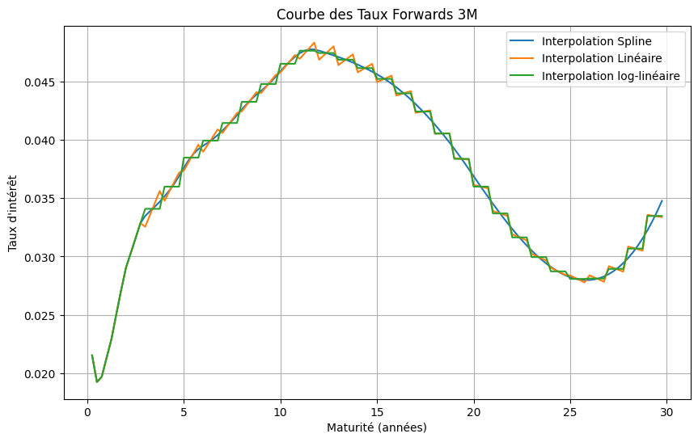
On constate des irrégularités pour les interpolations linéaires et log-linéaires, contrairement à la courbe obtenue via une interpolation spline qui est plus lisse.
Les irrégularités observées pour les interpolations linéaires et log-linéaires sont observés à partir de la maturité 3 ans. Ceci est cohérent avec l’analyse faite plus haut. En effet, à partir de cette maturité, les taux zero coupons ont été extraits à partir de taux swap de marché.
# 1bp = 0.01% donc 10bps = 0.10%=0.0001
df_bumped = yield_zc.copy()
df_bumped.loc[df_bumped["MAT"]==5,"MKT"] = df_bumped.loc[df_bumped["MAT"]==5,"MKT"] + 0.001
yield_bumped = bootstrap_yield_curve(df_bumped) # On refait le bootstraping
# Application du stripping
courbe_zc_bump = pd.DataFrame(zc_interpolation(yield_bumped))
# Tracé des courbes interpolées
plot_curve(courbe_zc_bump,
columns = ["Interpolation Spline", "Interpolation Linéaire","Interpolation log-linéaire"],
title= "Courbe de taux Zero-coupon shiftée")
C:\Users\DEBA\AppData\Local\Temp\ipykernel_24500\3189026096.py:23: RuntimeWarning: invalid value encountered in log
log_interp_zc = -np.log(temp(maturities)) / maturities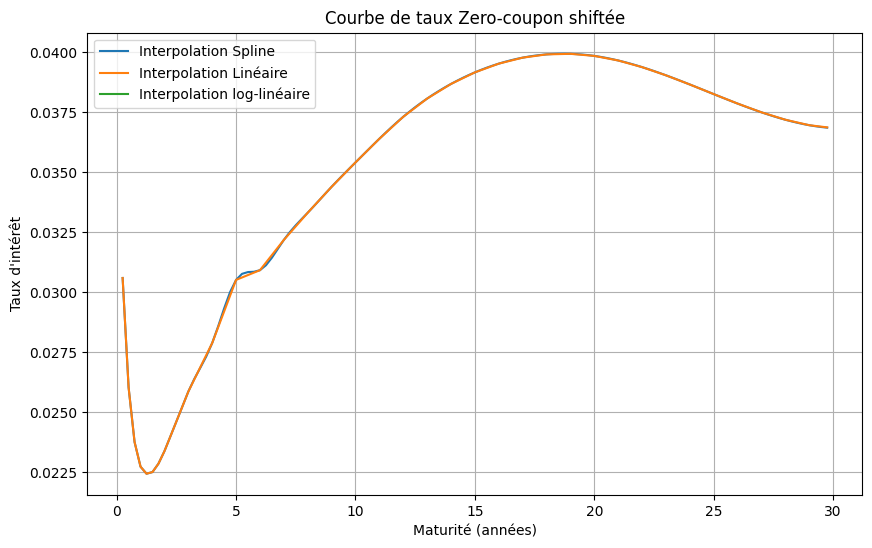
# Calcul de la courbe des taux forwards
forward_rates_bumped = pd.DataFrame(compute_forward_rates(yield_bumped))
forward_rates_bumped.rename(columns={"Interpolation Linéaire": "Interpolation Linéaire shift",
"Interpolation log-linéaire": "Interpolation log-linéaire shift",
"Interpolation Spline": "Interpolation Spline shift"}, inplace=True)
forward_rates_bumped = forward_rates_bumped.merge(forward_rates, on="MAT", how="inner")
# Tracé des courbes interpolées
plot_curve(forward_rates_bumped,
columns=["Interpolation Spline", "Interpolation Spline shift"],
title="Courbe des Taux Forwards 3M shiftée") # On passe l'axe correspondant
plot_curve(forward_rates_bumped,
columns=["Interpolation Linéaire", "Interpolation Linéaire shift"],
title="Courbe des Taux Forwards 3M shiftée")
plot_curve(forward_rates_bumped,
columns=["Interpolation log-linéaire", "Interpolation log-linéaire shift"],
title="Courbe des Taux Forwards 3M shiftée")
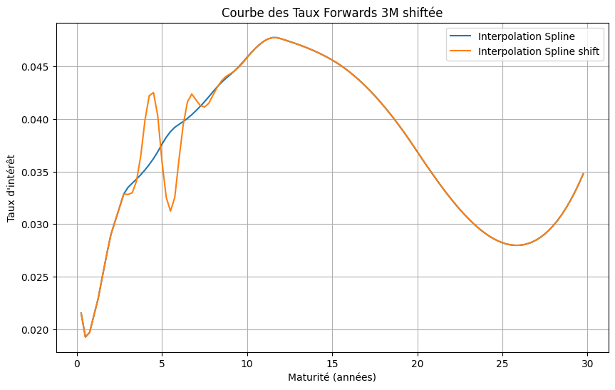
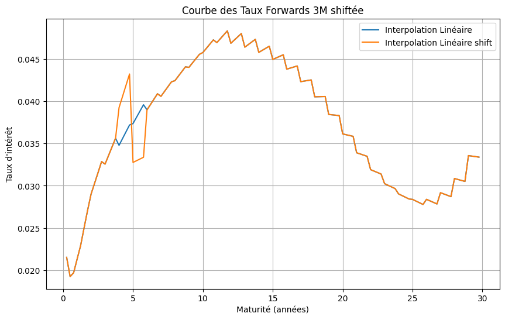
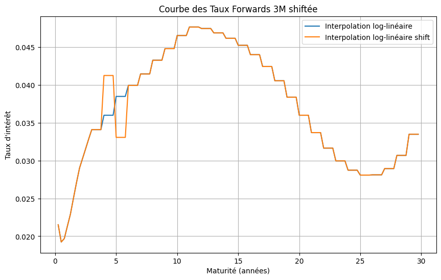
On observe que le shift de 10 bps sur le taux swap 5Y entraîne une modification des courbes de taux forward 3 mois, avec des effets qui varient selon la méthode d’interpolation utilisée.
Cette différence de comportement découle des propriétés des méthodes d’interpolation utilisées. L’interpolation linéaire et log-linéaire segmente l’évolution des taux entre deux maturités successives \(T_{i-1}\) et $ T_i$ , en supposant une variation linéaire des taux zero coupons sur chaque intervalle. Ainsi, lorsqu’un bump est appliqué, son impact reste localisé, et les taux forward reviennent rapidement à leur trajectoire initiale.
À l’inverse, l’interpolation spline assure une transition plus fluide en imposant des contraintes de régularité sur la dérivée seconde. Cette régularité propage l’effet du bump de manière plus progressive, entraînant une déviation plus large et plus persistante des taux forward.
Les caplets et floorlets, qui sont des options sur taux d’intérêt à court terme, sont généralement valorisés à l’aide du .
Rappelons les EDS des taux forwards, des taux de swap forward ainsi que les probabilités associées.
Rappelons les formules de valorisation des oplets et swaptions. Un caplet (resp. floorlet) est une option d’achat (resp. de vente) sur un taux Libor. En notant \(T_{i-1}\) la date d’échéance de l’option, et \(T_i\) la date de paiement fixé à la date, dans le modèle de Black, sa valorisation est donnée par :
\[\text{Caplet}(t, T_{i-1}, T_i) = N \delta_i B(t,T_i) \left[ L_i(t) \Phi(d_1) - K \Phi(d_2) \right]\]
\[\text{Floorlet}(t, T_{i-1}, T_i) = N \delta_i B(t,T_i) \left[ K \Phi(-d_2) - L_i(t) \Phi(-d_1) \right]\]
avec :
\[d_1 = \frac{\ln\left( \frac{L_i(t)}{K} \right) + \frac{1}{2} \sigma_i^2 (T_{i-1} - t)}{\sigma_i \sqrt{T_{i-1} - t}}, \quad d_2 = d_1 - \sigma_i \sqrt{T_{i-1} - t}\]
$N $ est le nominal,
\(\delta_i = T_i - T_{i-1}\) est le facteur de période associé au taux Libor,
\(B(t,T_i)\) est le prix du zéro-coupon à maturité \(T_i\) ,
\(L_i(t)\) est le taux forward observé à \(t\) pour la période \([T_{i-1}, T_i]\),
\(K\) est le taux d’exercice (strike),
\(\sigma_i\) est la volatilité implicite du taux forward \(L_i\),
\(\Phi\) est la fonction de répartition de la loi normale standard.
Une swaption est une option d’entrée dans un swap à une date future $T_0 $. Le prix d’une swaption \(payeuse\) s’écrit :
\(\text{Swaption}(t) = N \sum_{j=1}^{n} B(t,T_j) \left[ F_S(t) \Phi(d_1) - K \Phi(d_2) \right]\)
et celui d’une swaption :
\(\text{Swaption}(t) = N \sum_{j=1}^{n} B(t,T_j) \left[ K \Phi(-d_2) - F_S(t) \Phi(-d_1) \right]\)
avec :
\[d_1 = \frac{\ln\left( \frac{F_S(t)}{K} \right) + \frac{1}{2} \sigma^2 (T_0 - t)}{\sigma \sqrt{T_0 - t}}, \] \[d_2 = d_1 - \sigma \sqrt{T_0 - t}\]
où \(F_S(t)\) est le taux swap forward, \(\sigma\) la volatilité implicite de la swaption.
Les valeurs des différents paramètres servant aux calculs sont essentiellement :
- taux forward sur la période 5-6 ans est de \(3.9\%\), - le discount factor \((0.830)\) - qui est la valeur d’une obligation zero coupon de maturité 6 ans-, - la \(volatilité\) et le strike fournis dans l’énoncé.
def calculer_taux_forward(yield_curve, T, delta):
# Interpolation cubic des tx ZC pour estimer B(0,T) pour ces maturités
spline_interp_bond_prices = CubicSpline(yield_curve["MAT"], yield_curve["tx ZC"])
# Calcul des prix interpolés
B_t = np.exp(-spline_interp_bond_prices(T)*T)
B_t_delta = np.exp(-spline_interp_bond_prices(T + delta)*(T + delta))
# Calcul du taux forward delta*12 Mois
return ((B_t / B_t_delta) - 1)/delta
def prix_caplet(forward, strike, volatilite, T, delta=1):
"""
Calcule le prix d'un caplet en utilisant la formule de Black.
:param forward: Le taux forward pour la période donnée
:param strike: Le strike du caplet en taux relatif
:param volatilite: La volatilité implicite du caplet
:param T: La maturité du caplet (en années)
:param taux_zerocoupon: Le taux zéro-coupon pour la maturité T
:return: Le prix du caplet
"""
# Calcul des d1 et d2 pour la formule de Black
d1 = (np.log(forward / strike) + 0.5 * volatilite**2 * T) / (volatilite * np.sqrt(T))
d2 = d1 - volatilite * np.sqrt(T)
# Fonction de répartition normale
N_d1 = norm.cdf(d1)
N_d2 = norm.cdf(d2)
# Calcul du discount factor
taux_zc_T_plus_delta = yield_zc[yield_zc['MAT'] == T + delta]["tx ZC"].values[0]
discount_factor = np.exp(-taux_zc_T_plus_delta * (T+delta))
# Prix du caplet
prix = discount_factor * (forward * N_d1 - strike * N_d2)
return np.array([prix, discount_factor])
def calculer_prix_caplets(zero_coupons_df, strikes, volatilites, T, delta =1):
"""
Calcule les prix des caplets sur Euribor 12M à partir des données et des paramètres fournis.
:param zero_coupons_df: DataFrame contenant les taux zéro-coupon et les maturités
:param strikes: Liste des strikes en bps
:param volatilites: Liste des volatilités implicites des caplets
:param T: Maturité des caplets (en années)
:return: Une liste des prix des caplets
"""
prix_caplets = []
# Calcul du taux forward pour la maturité T
forward = calculer_taux_forward(zero_coupons_df, T, delta)
print( "Taux forward :\t", round(forward*100,2),'%')
for strike, volatilite in zip(strikes, volatilites):
# Conversion du strike de bps en taux relatif
strike_rel = forward + (strike / 10000)
# Calcul du prix du caplet pour chaque strike et volatilité
prix = prix_caplet(forward, strike_rel, volatilite, T, delta)
prix_caplets.append(prix[0])
print("Discount factor: \t", np.round(prix[1],2))
return prix_capletsLes prix des caplets suivant differents strikes (en bps et en rel. / fwd) , et volatilités sont donnés ci après:
# Liste des strikes en bps
strikes = np.array([-100, -50, -25, 0, 25, 50, 100])
# Liste des volatilités des caplets
vol = np.array([31.2/100, 28.4/100, 26.6/100, 25.0/100, 24.4/100, 25.0/100, 27.2/100])
# Calculer les prix des caplets
prix_caplets = calculer_prix_caplets(yield_zc, strikes, vol, T=5) # Maturité des caplets (5 ans)
# Préparation des données pour le tableau
table_data = []
for i in range(len(prix_caplets)):
table_data.append([strikes[i], round(vol[i]*100,2), round(prix_caplets[i]*100,2)])
# Affichage des résultats dans un tableau
headers = ["Strike (bps)", "Volatilité (%)", "Caplet MKT Price (%)"]
print(tabulate(table_data, headers=headers, tablefmt="pretty", floatfmt=".4f"))Taux forward : 3.9 %
Discount factor: 0.83
+--------------+----------------+----------------------+
| Strike (bps) | Volatilité (%) | Caplet MKT Price (%) |
+--------------+----------------+----------------------+
| -100 | 31.2 | 1.25 |
| -50 | 28.4 | 0.98 |
| -25 | 26.6 | 0.84 |
| 0 | 25.0 | 0.71 |
| 25 | 24.4 | 0.62 |
| 50 | 25.0 | 0.57 |
| 100 | 27.2 | 0.52 |
+--------------+----------------+----------------------+On souhaite retrouver la dynamique du taux forward instantané. Le prix du bond zéro coupon évoluant sous la probabilité risque neutre selon la dynamique:
\[\frac{dB(t,T)}{B(t,T)} = r_t dt + \Gamma(t,T)dW_t^Q\]
qui est une EDS géométrique, on vérifie par le lemme d’Îto que la solution à cette EDS est
\[ B(t,T) = B(0,T) \exp\left(\int_0^tr_udu -\frac{1}{2} \int_0^t \Gamma^2(u,T)du + \int_0^t \Gamma(u,T)dW_u^Q\right) \] .
En appliquant le logarithme à cette égalité, on obtient
\[ \ln(B(t,T)) = \ln(B(0,T)) + \int_0^tr_udu -\frac{1}{2} \int_0^t \Gamma^2(u,T)du + \int_0^t \Gamma(u,T)dW_u^Q \]
et
\[\begin{align*} f(t,T) &= -\partial_T \ln(B(t,T))\\ &= -\partial_T \ln(B(0,T)) +\frac{1}{2} \int_0^t 2\Gamma(u,T)\partial_T\Gamma(u,T)du - \int_0^t \partial_T\Gamma(u,T)dW_u^Q \end{align*}\]
Par suite
\[\begin{align*} df(t,T) &= \Gamma(t,T)\partial_T\Gamma(t,T) -\partial_T\Gamma(t,T)dW_t^Q\\ &= \gamma(t,T) \int_t^T \gamma(t,u)du + \gamma(t,T)dW_t^Q \end{align*}\]
où \[\gamma(t,T) = -\partial_T\Gamma(t,T).\]
Le lemme dÎto permet alors de retrouver
\[ f(t,T) = f(o,T) + \int_0^t \gamma(s,T) \int_s^T \gamma(s,u)duds + \int_0^t \gamma(s,T)dW_s^Q \].
On suppose que le modèle HJM est gaussien, linéaire et calibrable.Ces trois hypothèses nous permettent d’écrire:
\[ \begin{cases} \gamma(t,T) = \sigma(t)e^{-\lambda(T-t)} \\ \Gamma(t,T) = \frac{\sigma(t)}{\lambda}(e^{-\lambda(T-t)}-1) \end{cases} \] où la fonction de volatilité instantanée \(\sigma(t)\) est constante par morceaux.
On considère le modèle de Hull&White
\[ dX_t = (\phi(t)-\lambda X_t) + \sigma(t)dW_t^Q. \]
Le modèle de Hull-White fait partie de la famille des EDS à coefficients affines.
On veut déterminer la loi du processus \(X_t|X_s\). On commence par résoudre l’EDS à coefficients affines \[ dX_t = (\phi(t) - \lambda X_t)dt + \sigma(t) dW_t^Q \].
Posons \(Y_t = X_t e^{\lambda t}\). Alors,
\[\begin{align*} dY_t &= \lambda e^{\lambda t} X_t dt + e^{\lambda t}dX_t\\ &= \lambda e^{\lambda t} X_t dt + e^{\lambda t} \left( (\phi(t) - \lambda X_t)dt + \sigma(t) dW_t^Q \right)\\ &= \lambda e^{\lambda t} X_t dt + e^{\lambda t} \phi(t)dt - e^{\lambda t} \lambda X_tdt + e^{\lambda t} \sigma(t) dW_t^Q\\ &= e^{\lambda t} \phi(t)dt + e^{\lambda t} \sigma(t) dW_t^Q\\ \end{align*}\]
Ainsi, par le lemme d’Îto,
\[\begin{align*} Y_t &= Y_0 + \int_0^t e^{\lambda u} \phi(u)du + \int_0^t e^{\lambda u} \sigma(u) dW_u^Q\\ X_t e^{\lambda t} &= Y_0 + \int_0^t e^{\lambda u} \phi(u)du + \int_0^t e^{\lambda u} \sigma(u) dW_u^Q\\ X_t &= X_0 + e^{-\lambda t} \int_0^t e^{\lambda u} \phi(u)du + e^{-\lambda t} \int_0^t e^{\lambda u} \sigma(u) dW_u^Q \end{align*}\]
Posons
\[ M_t = \int_0^t e^{\lambda u} \sigma(u) dW_u^Q, \]
pour tout \(t \geq 0\).
Le processus \((M_t)_{t \geq 0}\) est une martingale locale comme intégralle stochastique d’une martingale locale et
\[ E([M]_t) = \int_0^t e^{\lambda 2u} \sigma^2(u)du < +\infty, \]
donc \(M\) est une vraie martingale.
Finalement, \(X_t\) suit une distribution gaussienne, pour tout \(t \geq 0\).
On en déduit que \(X_t|X_s\) suit une loi gaussienne d’espérance \(E(X_t |X_s)\) et de variance \(V(X_t |X_s)\).
Soit \(t>s \geq 0\),
\[\begin{align*} X_t e^{\lambda t} &= X_0 + \int_0^s e^{\lambda u} \phi(u)du + \int_0^s e^{\lambda u} \sigma(u) dW_u^Q + \int_s^t e^{\lambda u} \phi(u)du + \notag \\ &\quad \int_s^t e^{\lambda u} \sigma(u) dW_u^Q\\ X_t e^{\lambda (t-s)} &= e^{-\lambda s} \left(X_0 + \int_0^s e^{\lambda u} \phi(u)du + \int_0^s e^{\lambda u} \sigma(u) dW_u^Q \right)+ \notag \\ &\quad e^{-\lambda s} \left(\int_s^t e^{\lambda u} \phi(u)du + \int_s^t e^{\lambda u} \sigma(u) dW_u^Q\right)\\ X_t e^{\lambda (t-s)} &= X_s + e^{-\lambda s} \left(\int_s^t e^{\lambda u} \phi(u)du + \int_s^t e^{\lambda u} \sigma(u) dW_u^Q\right)\\ X_t &= X_se^{-\lambda (t-s)} + e^{-\lambda t} \int_s^t e^{\lambda u} \phi(u)du + e^{-\lambda t} (M_t-M_s)\\ \end{align*}\]
Il vient que
\[\begin{align*} E(X_t|X_s) &= E(X_se^{-\lambda (t-s)} + e^{-\lambda t} \int_s^t e^{\lambda u} \phi(u)du + e^{-\lambda t} (M_t-M_s)|\mathcal{F}_s)\\ &= X_se^{-\lambda (t-s)} + e^{-\lambda t} \int_s^t e^{\lambda u} \phi(u)du + e^{-\lambda t} E(M_t-M_s |\mathcal{F}_s)\\ &= X_se^{-\lambda (t-s)} + e^{-\lambda t} \int_s^t e^{\lambda u} \phi(u)du \text{, car $M$ est une martingale}\\ \end{align*}\]
\[\begin{align*} V(X_t|X_s) &= V(X_se^{-\lambda (t-s)} + e^{-\lambda t} \int_s^t e^{\lambda u} \phi(u)du + e^{-\lambda t} (M_t-M_s)|\mathcal{F}_s)\\ &= e^{-2\lambda t}V(M_t-M_s|\mathcal{F}_s)\\ &= e^{-2\lambda t}E((M_t-M_s)^2|\mathcal{F}_s)\\ &= e^{-2\lambda t}E((M_t-M_s)^2) \text{, car $M$ est a accroissements indépendants}\\ &= e^{-2\lambda t}\int_s^t e^{\lambda 2u}\sigma^2(u) du\\ &= \int_s^t e^{-\lambda 2(t-u)}\sigma^2(u) du\\ \end{align*}\]
Finalement,
\[ X_t|X_s \sim \mathcal{N}\left( X_se^{-\lambda (t-s)} + e^{-\lambda t} \int_s^t e^{\lambda u} \phi(u)du,\int_s^t e^{-\lambda 2(t-u)}\sigma^2(u) du\right) \]
On a
\[ Z_t = \frac{B(t,T_{i})}{B(t,T_{i+1})}, \]
avec \[ \frac{dB(t,T)}{B(t,T)} = r_t dt + \Gamma(t,T)dW_t^Q. \]
\[\begin{align*} \frac{dZ_t}{Z_t} &= \frac{dB(t,T_{i})}{B(t,T_{i})} - \frac{dB(t,T_{i+1})}{B(t,T_{i+1})} - \left< \frac{dB(t,T_{i})}{B(t,T_{i})} - \frac{dB(t,T_{i+1})}{B(t,T_{i+1})} | \frac{dB(t,T_{i+1})}{B(t,T_{i+1})}\right>\\ &= r_t dt + \Gamma(t,T_{i})dW_t^Q - r_t dt - \Gamma(t,T_{i+1})dW_t^Q - \notag \\ &\quad \left< r_t dt + \Gamma(t,T_{i})dW_t^Q - r_t dt - \Gamma(t,T_{i+1})dW_t^Q | r_t dt + \Gamma(t,T_{i+1})dW_t^Q\right>\\ &= \Gamma(t,T_{i})dW_t^Q - \Gamma(t,T_{i+1})dW_t^Q - \notag \\ &\quad \left< \Gamma(t,T_{i})dW_t^Q - \Gamma(t,T_{i+1})dW_t^Q | r_t dt + \Gamma(t,T_{i+1})dW_t^Q\right>\\ &= \Gamma(t,T_{i})dW_t^Q - \Gamma(t,T_{i+1})dW_t^Q -\Gamma(t,T_{i}) \Gamma(t,T_{i+1}) d<W^Q>_t + \notag \\ &\quad \Gamma^2(t,T_{i+1}) d<W^Q>_t\\ &= (\Gamma(t,T_{i})- \Gamma(t,T_{i+1}))(dW_t^Q - \Gamma(t,T_{i+1}) dt) \text{, car $d<W^Q>_t = dt$}\\ &= (\Gamma(t,T_{i})- \Gamma(t,T_{i+1}))d\tilde{W}^Q_t \text{, avec $d\tilde{W}^Q_t =dW_t^Q - \Gamma(t,T_{i+1}) dt$}\\ \end{align*}\]
D’où
$ Z_t = Z_0 . $
En notant \(L_i(t)\) le taux libor forward à la date \(t\) qui fixe en \(T_i\) et qui paye en \(T_{i+1}\), on a
\[ L_i(t) = \frac{1}{\delta_i} (\frac{B(t,T_{i})}{B(t,T_{i+1})} - 1) = \frac{1}{\delta_i} (Z_t - 1). \]
On en déduit que
$ L_i(t) = - + (1 + _i L_i(0)) $
$ $
En appliquant le lemme d’Îto à cette dernière égalité on obtient la dyanamique du taux libor forward donnée par:
\[ dL_i(t) = (L_i(t) + \frac{1}{\delta_i})(\Gamma(t,T_{i})- \Gamma(t,T_{i+1}))d\tilde{W}^Q_t. \]
Le payoff d’un caplet vanille sur taux libor \(L_i(T_i)\), de maturité \(T_i\), de date de paiement \(T_{i+1}\) et de strike \(K\) s’écrit
\[ Payoff(T_i, T_{i+1}, K) = \delta_i(L_i(T_i) - K)^+. \]
La formule de valorisation de ce caplet dans le cadre du modèle d’Hull and White
\[\begin{align*} B(0,T_{i+1})E(Payoff(T_i, T_{i+1}, K)) = B(0,T_{i+1})E(\delta_i(L_i(T_i) - K)^+) \end{align*}\]
or
\[\begin{align*} Payoff(T_i, T_{i+1}, K) &= \delta_i(L_i(T_i) - K)^+\\ &= \delta_i(\frac{1}{\delta_i} (Z_{T_i} - 1) - K)^+ \\ &= (Z_{T_i} - (\delta_iK + 1))^+ \\ &= (Z_{T_i} - \tilde{K})^+, \text{ avec $\tilde{K} = \delta_iK + 1$} \end{align*}\]
Puisque la dynamique du processus \(Z\) est décrite par le modèle de Black, on déduit de la remaque ci-dessus que le prix d’un caplet vanille sur taux libor \(L_i(T_i)\), de maturité \(T_i\), de date de paiement \(T_{i+1}\) et de strike \(K\) peut s’écrire sous la forme
\[\begin{align*} Caplet(T_i, T_{i+1}, K) &= C(Z_{T_i},\tilde{K}, T_i, \sigma^*_i, B(0,T_{i+1})) \end{align*}\]
\[ \sigma^*_i = \frac{1}{T_i - t} \int_t^{T_i} (\Gamma(u,T_{i})- \Gamma(u,T_{i+1}))du\ \]
On considère un caplet sur l’Euribor 12M de maturité \(5\) ans, avec un strike at-the-money. Nous cherchons la volatilité implicite \(\sigma\) telle que le prix modèle (Hull&White) soit égal au prix observé sur le marché.
Pour ce faire, nous avons utilisé une méthode de type dichotomie pour estimer la volatilité implicite associée au processus \(Z_t\), et avons obtenu une valeur de \(\mathbf{0.9271} \%.\)
Dans un second temps, nous en avons déduit analytiquement le paramètre de volatilité instantanée du modèle, estimé à \(\mathbf{1.071}\%\).
Nous en déduisons les prix “modèles” des caplets, obtenus à partir de la volatilité calibrée précédemment, pour les strikes suivants : FWD \(\pm\) 25 bps, 50 bps et 100 bps.
# Volatilité instantanée
def sigma(T_i_1, T_i, lambd, vol):
beta = (1-np.exp(-lambd*(T_i - T_i_1)))/lambd
sigma = np.sqrt((2*lambd*T_i_1)/(1-np.exp(-2*lambd*T_i_1))) * vol / beta
return sigma
# Pricer du caplet HW
def P_HW(t,Z, K, T_i_1, T_i, B, vol):
delta = T_i - T_i_1
d1 = (np.log(Z/K) + 0.5 * (vol**2)*(T_i_1 - t))/(vol * np.sqrt(T_i_1 - t))
d2 = d1 - vol*np.sqrt(T_i_1 - t)
caplet = delta * B[1] * (Z * norm.cdf(d1) - K * norm.cdf(d2))
return caplet# Initialisation des paramètres
t = 0
T_i_1 = 5
T_i = 5 + 1
lambd = 0.05
P_MKT = 0.7137 / 100 # Prix du marché
B = np.array([yield_zc[yield_zc.MAT==T_i_1]["B(0,MAT)"],
yield_zc[yield_zc.MAT==T_i]["B(0,MAT)"] ])
Z = B[0] / B[1]
K = (Z-1)/(T_i-T_i_1)
K_tilde = 1 + (T_i-T_i_1)*K
L_0 = (Z-1)/(T_i-T_i_1) # Taux libor# Recherche de la vol implicite par dichotomie
def dichot(t,Z, K_tilde, T_i_1, T_i, B, P_MKT):
sig_inf = 1e-8
sig_sup = 1e1
epsi = 1e-8
sig_moy = (sig_inf + sig_sup)/2
error = sig_sup - sig_inf
while error>epsi:
p_hw = P_HW(t,Z, K_tilde, T_i_1, T_i, B, vol=sig_moy)
if p_hw > P_MKT:
sig_sup = sig_moy
elif p_hw < P_MKT:
sig_inf = sig_moy
sig_moy = (sig_inf + sig_sup)/2
error = np.abs(sig_sup - sig_inf)
return sig_moy
0.009270474060870853np.float64(0.01071380211500768)array([0.007137])strikes = np.array([-100, -50, -25, 0, 25, 50, 100])/10_000
caplets = np.array([P_HW(t,Z, 1 + (T_i-T_i_1)*(K+strike), T_i_1, T_i, B, vol_imp) for strike in strikes])
# Préparation des données pour le tableau
table_data = []
for i in range(len(caplets)):
table_data.append([strikes[i]*10_000, np.round(caplets[i]*100,2)])
# Affichage des résultats dans un tableau
headers = ["Strike (bps)", "Prix Modèle du Caplet (%)"]
print(tabulate(table_data, headers=headers, tablefmt="pretty", floatfmt=".4f"))+--------------+---------------------------+
| Strike (bps) | Prix Modèle du Caplet (%) |
+--------------+---------------------------+
| -100.0 | [1.2] |
| -50.0 | [0.94] |
| -25.0 | [0.82] |
| 0.0 | [0.71] |
| 25.0 | [0.62] |
| 50.0 | [0.53] |
| 100.0 | [0.38] |
+--------------+---------------------------+C:\Users\DEBA\AppData\Local\Temp\ipykernel_24500\1912911432.py:6: UserWarning: No artists with labels found to put in legend. Note that artists whose label start with an underscore are ignored when legend() is called with no argument.
plt.legend()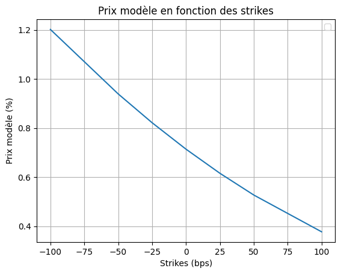
Les volatilités implicites retrouvés pour ces prix modèles sont resumés dans le tableau ci après:
# Inversion des prix pour retrouver la vol implicite
L_i = (Z-1)/(T_i-T_i_1)
vols = np.array([dichot(t,L_i, strike + K, T_i_1, T_i, B, caplet) for strike,caplet in zip(strikes,caplets)])
#vols_inst = np.array([sigma(T_i_1, T_i, lambd, vol=vol) for vol in vols])
# Préparation des données pour le tableau
table_data = []
for i in range(len(caplets)):
table_data.append([strikes[i]*10_000, np.round(vols[i]*100,2), np.round(caplets[i]*100,2)])
# Affichage des résultats dans un tableau
headers = ["Strike (bps)", "Vol implicite (%)", "Prix Modèle du Caplet (%)"]
print(tabulate(table_data, headers=headers, tablefmt="pretty", floatfmt=".4f"))+--------------+-------------------+---------------------------+
| Strike (bps) | Vol implicite (%) | Prix Modèle du Caplet (%) |
+--------------+-------------------+---------------------------+
| -100.0 | 28.87 | [1.2] |
| -50.0 | 26.74 | [0.94] |
| -25.0 | 25.83 | [0.82] |
| 0.0 | 25.0 | [0.71] |
| 25.0 | 24.24 | [0.62] |
| 50.0 | 23.55 | [0.53] |
| 100.0 | 22.3 | [0.38] |
+--------------+-------------------+---------------------------+Comparons le smile modèle avec le smile de marché
vol_mkt = np.array([31.2, 28.4, 26.6, 25.0, 24.4, 25.0, 27.2])
plt.plot(strikes*10_000, vols*100, label="Vol implicite", marker='o')
plt.plot(strikes*10_000, vol_mkt, label="Vol de marché", marker='o')
plt.xlabel("Strikes (bps)")
plt.ylabel("Volatilité (%)")
plt.title("Volatilités en fonction des strikes")
plt.legend()
plt.grid()
plt.show()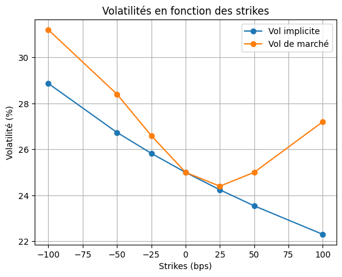
On observe pour ce modèle un Skew-Smile. Le modèle de Hull & white n’arrive pas à reproduire le smile de marché. .
Nous souhaitons valoriser un caplet - de strike K, - de dates de fixing \(T_i\) et de paiement \(T_{i+1}\), - avec une barrière désactivante \(B\) telle que \(B > K\).
Écrivons le payoff de l’option décrite et traçons la fonction de payoff en fonction de \(L_i(T_i)\). Le payoff l’option s’écrit :
\[ \text{Payoff}_{T_{i+1}} = \delta_i \cdot (L_i(T_i) - K)^+ \cdot \mathbb{1}_{\{ L_i(T_i) < B \}} \]
avec \(\delta_i = T_{i+1}-T_i\).
Il correspond à celui d’un caplet classique, mais est nul lorsque le taux Libor au fixing dépasse la barrière.
Ainsi, fonction de payoff est donc nulle pour \(L_i(T_i) < K\) ou \(L_i(T_i) \geq B\), et croît linéairement entre \(K\) et $ B$.
Une representation de la fonction de payoff est donnée la figure ci-dessous.
#3.7.
#1. Payoff et courbe
# Définition des paramètres
delta = 1
Z_T = 1.05 # Exemple de valeur pour Z_T
B = 0.4 # Barrière (B)
# Définition des valeurs possibles pour Li(Ti)
Li_Ti = np.linspace(0.001, 0.5, 500)
# Calcul du payoff du caplet désactivant
payoff = np.maximum(0, Li_Ti - K) * (Li_Ti < B)
# Tracé de la fonction de payoff
plt.figure(figsize=(8, 6))
plt.plot(Li_Ti, payoff, label='Payoff du Caplet Désactivant', color='b')
plt.axvline(x=K, color='r', linestyle='--', label='Strike (K)')
plt.axvline(x=B, color='g', linestyle='--', label='Barrière (B)')
plt.title('Fonction de Payoff d\'un Caplet Désactivant')
plt.xlabel('Li(Ti)')
plt.ylabel('Payoff')
plt.legend()
plt.grid(True)
plt.show()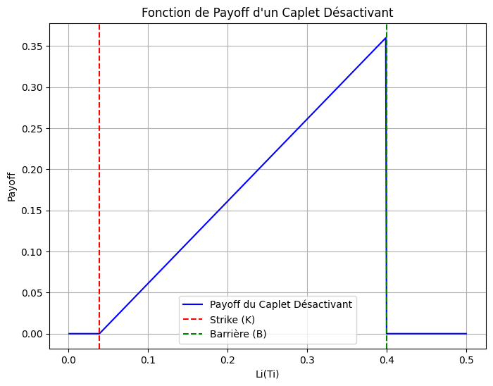
Cette option est moins chère qu’un caplet classique de strike \(K\) car elle comporte une barrière désactivante qui limite le risque pour le vendeur. En effet, dès que le taux dépasse $B $, le caplet est désactivé, ce qui protège le vendeur contre les scénarios de forte hausse de taux.
Du point de vue de l’acheteur, cette protection a un coût : l’option devient moins attractive, car elle ne couvre plus les situations les plus défavorables. La probabilité de recevoir un payoff est donc réduite, ce qui justifie un prix plus bas par rapport à un caplet standard.
\[ \text{Payoff}_{T_{i+1}} = \delta_i \cdot( (L_i(T_i) - K)^+ -(L_i(T_i) - B)^+ -(B-K)\mathbb{1}_{\{ L_i(T_i) > B \}}) \] La prise en compte du smile de volatilité est indispensable pour deux raisons principales. Premièrement, elle permet de modéliser les variations du sous-jacent (ici, le taux Libor), qui influencent directement la valeur de l’option. Deuxièmement, elle est cruciale pour évaluer l’effet de la barrière : une volatilité élevée accroît la probabilité que le taux Libor dépasse la barrière, désactivant ainsi l’option, tandis qu’une faible volatilité réduit cette probabilité, maintenant l’option active.
La méthode de Monte-Carlo repose sur des simulations aléatoires pour estimer la valeur attendue d’un payoff futur, actualisé à aujourd’hui. Cette méthode repose sur la loi des grands nombres : si l’on simule un grand nombre de scénarios possibles pour l’évolution du sous-jacent (sous la loi de qui gouverne sa dynamique), la moyenne des payoffs actualisés converge vers le prix théorique de l’instrument.
Rappelons le principe de simulation d’une Loi Normale à partir d’une Loi Uniforme.
Soit \(U \sim \mathcal{U}(0,1)\) une variable aléatoire uniforme. Il est possible d’obtenir une variable aléatoire \(Z\) suivant une loi normale \(\mathcal{N}(0,1)\) en appliquant la fonction quantile (ou la réciproque de la fonction de répartition) de la loi normale :
\[ Z = \Phi^{-1}(U) \]
Plus généralement, si l’on souhaite simuler une variable \(X\) suivant une loi normale de moyenne $$ et d’écart-type $$, soit $X (, ^2) $, on peut utiliser la transformation suivante :
\[ X = \mu + \sigma \cdot \Phi^{-1}(U) \]
def B(t,T, x, lambd, sig):
def beta(t,T):
return (1- np.exp(-lambd*(T-t)))/lambd
def phi(t):
return (sig**2)*(1-np.exp(-2*lambd*t))/(2*lambd)
B_t = float(yield_zc[yield_zc.MAT==t]["B(0,MAT)"].iloc[0])
B_T = float(yield_zc[yield_zc.MAT==T]["B(0,MAT)"].iloc[0])
bet = beta(t,T)
B_t_T = (B_T/B_t) * np.exp(-0.5*phi(t)*(bet**2)-bet*x)
return B_t_T
def option_vanille(T, delta, K, sig, lambd, barrier, M=10_000):
# Number of time steps (daily steps for T years)
n = round(T * 252)
Delta = T / n # Time step size
t_vec = np.arange(1, n + 1) * Delta # Time steps
# Simulate paths of X_t
X = np.zeros((M, n))
for t in range(n - 1):
phi_t = (sig**2 / (2 * lambd)) * (1 - np.exp(-2 * lambd * t_vec[t]))
gamma_t_T = (sig / lambd) * (np.exp(-lambd * (T - t_vec[t])) - 1)
# Euler-Maruyama discretization
X[:, t + 1] = X[:, t] + (phi_t + sig * gamma_t_T - lambd * X[:, t]) * Delta + sig * np.sqrt(Delta) * np.random.normal(0, 1, size=M)
# Calculate Libor rates for each path
L_i = np.array([((1 / B(T, T + delta, X[:, t], lambd, sig)) - 1) / delta for t in range(n)])
# Barrier condition
L_i_B = (L_i[-1,:] < barrier).astype(int)
# Payoff calculation
payoff = np.maximum(L_i[-1,:] - K, 0) * L_i_B
# Discounting
B_T_delta = float(yield_zc[yield_zc.MAT == T + delta]["B(0,MAT)"].iloc[0])
option_price = B_T_delta * np.mean(payoff)
option_std = np.std(B_T_delta*payoff)
#plt.plot(L_i[:,:1000])
return np.array([option_price, option_std]) # prix et ecart-type de l'optionLa valeur de l’option calculée à l’aide de la méthode de Monte-Carlo est de 0.29% pour 10 000 simulations.
Prix du caplet: 0.002952664054116537
Standard error du caplet: 0.00485203756177546La dégénération du produit en faisant tendre la barrière vers 0 et \(+\infty\) est donnée par la figure ci-dessous.
np.random.seed(90)
barriers = np.linspace(0,1, num=50) # Différentes barrières
K = L_0 - 100/ 10_000
caplets_barrier = np.array([option_vanille(T = 5, delta = 1, K = K, sig = vol_inst, lambd = lambd, barrier = barrier)[0] for barrier in barriers])
plt.plot(barriers, caplets_barrier, label ="Prix de l'option")
plt.xlabel("Barrières")
plt.ylabel("Prix de l'option")
plt.legend()
plt.title("Prix de l'option en fonction du niveau de la barrière")
plt.grid(True)
plt.show()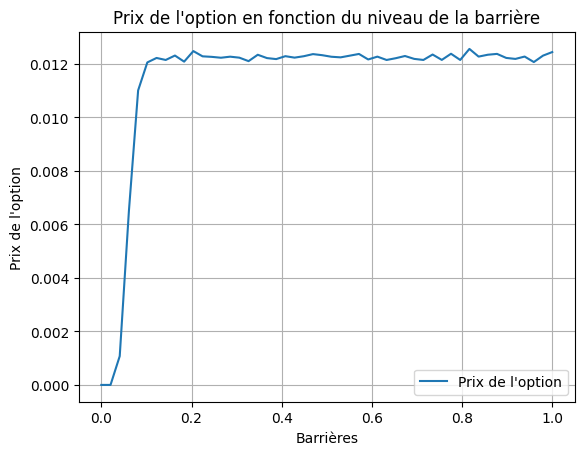
Afin de vérifier que le pricer fonctionne correctement pour 10 000 simulations, on dégénère la barrière (à 1000%) pour l’option ATM. On retrouve alors le prix de marché. De plus, la standard error calculée est très proche de la volatilité instantanée, ce qui conforte la qualité du pricer et du nombre de simulations retenu.
Prix du caplet: 0.007172226153832583
Standard error du caplet: 0.01051374992984369La barrière est rendue “bermudéenne” en étendant la condition de désactivation aux dates 1Y, 2Y, 3Y, 4Y et 5Y. La nouvelle fonction de payoff s’écrit:
\[\begin{align*} \text{Payoff}_{T_{i+1}} &= \begin{cases} \delta_i \cdot (L_i(T_i) - K)^+ \text{ si aucune la barrière n'est franchie en aucune date } T_j \\ 0 \text{ si la barrière est franchie au moins une fois} \end{cases} \\ &=\delta_i \cdot (L_i(T_i) - K)^+ \cdot \mathbb{1}_{\{max_{1\leq j \leq 5} L_i(T_j) < B \}}\\ \end{align*}\]
# Pricer d'une option bermudéenne
def option_vanille_bermude(T, delta, K, sig, lambd, barrier, M=10_000):
"""
Valorisation d'un caplet avec barrière bermudéenne via Monte Carlo.
Paramètres :
- T : Dates d'exercice bermudéennes (ex. [1, 2, 3, 4, 5] ans)
- delta : Intervalle de temps entre la date de fixing et la date de paiement
- K : Strike du caplet
- sig : Volatilité du taux d'intérêt
- lambd : Paramètre de régression vers la moyenne du taux court
- barrier : Barrière désactivante
- yield_zc : Courbe des taux zéro-coupon (DataFrame avec colonnes 'MAT' et 'B(0,MAT)')
- M : Nombre de simulations Monte Carlo
"""
# Discrétisation temporelle : pas de temps quotidien
n = round(T[-1] * 252) # Nombre total de pas de temps
Delta = T[-1] / n # Taille du pas de temps
t_vec = np.arange(1, n + 1) * Delta # Vecteur des dates simulées
# Simulation des trajectoires du taux court via un processus de Vasicek/Hull-White
X = np.zeros((M, n))
for t in range(n - 1):
phi_t = (sig**2 / (2 * lambd)) * (1 - np.exp(-2 * lambd * t_vec[t]))
gamma_t_T = (sig / lambd) * (np.exp(-lambd * (T[-1] - t_vec[t])) - 1)
# Euler
X[:, t + 1] = X[:, t] + (phi_t + sig * gamma_t_T - lambd * X[:, t]) * Delta \
+ sig * np.sqrt(Delta) * np.random.normal(0, 1, size=M)
# Vérification de la désactivation bermudéenne aux dates spécifiques
T_surveillance = np.array(T) # Dates de surveillance de la barrière
# Calcul des L_i aux dates de surveillance
L_i_surveillance = np.zeros((M, len(T_surveillance)))
for i, T_i in enumerate(T_surveillance):
idx = round(T_i * 252) - 1 # Indice temporel à la date de surveillance
L_i_surveillance[:, i] = ((1 / B(T_i, T_i + delta, X[:, idx], lambd, sig)) - 1) / delta # Libor forward
# Désactivation si la barrière est franchie à une date de surveillance
barrier_crossed = np.any(L_i_surveillance >= barrier, axis=1)
# Calcul des payoffs à la date de maturité
idx = round(T[-1] * 252) - 1 # Indice temporel à la maturité
L_i_maturity = ((1 / B(T[-1], T[-1] + delta, X[:, idx], lambd, sig)) - 1) / delta # Libor forward
# Payoff du caplet
payoff = np.maximum(0, L_i_maturity - K) # Payoff à la maturité
payoff[barrier_crossed] = 0 # Désactivation complète
# Actualisation et valorisation
B_T_delta = float(yield_zc[yield_zc.MAT == T[-1] + delta]["B(0,MAT)"].iloc[0])
option_price = B_T_delta * np.mean(payoff)
return np.array([option_price, np.mean(barrier_crossed)]) # retourn le prix de l'option ainsi que
# la proba de franchissement de la barrièrenp.random.seed(90)
barrier = L_0 + 100/ 10_000
K = L_0 - 100/ 10_000
cap = option_vanille_bermude(T = np.array([1,2,3,4,5]), delta = 1, K = K, sig = vol_inst, lambd = lambd, barrier = barrier)
print("Prix de l'option bermudéenne: \t", round(cap[0]*100,2), "%")
print("Probabilité d'atteinte de la barrière: \t", round(cap[1]*100, 2), "%")Prix de l'option bermudéenne: 0.22 %
Probabilité d'atteinte de la barrière: 40.78 %Avec un strike \(ATM-100\) et une barrière \(ATM+100\), le prix de cette option est de \(0.22\%\).
L’impact de la mean reversion sur la valorisation de l’option est illustré par la figure ci-après.
NB: Le modèle est recalibré sur le même caplet ATM pour chaque valeur de mean-reversion
import warnings
warnings.filterwarnings("ignore")
barrier = L_0 + 100/ 10_000
K = L_0 - 100/ 10_000
lambdas = np.linspace(0,1, num=100)
cap_mean_rev = np.array([option_vanille_bermude(T = np.array([1,2,3,4,5]), delta = 1, K = K,
sig = sigma(5, 6, lambd, vol=vol_imp), # On recalibre la vol pour chaque lambda
lambd = lambd,
barrier = barrier) for lambd in lambdas] )
plt.plot(lambdas, cap_mean_rev[:,0], label ="Prix de l'option")
plt.xlabel("Mean reversion ($\lambda$)")
plt.ylabel("Prix de l'option")
plt.legend()
plt.title("Prix de l'option en fonction de la mean reversion")
plt.grid(True)
plt.show()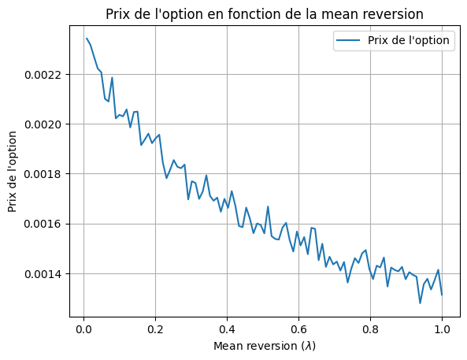
lambdas = np.linspace(0,1, num=100)
vol_mean_rev = np.array([sigma(5, 6, lambd, vol=vol_imp) for lambd in lambdas] )
plt.plot(lambdas, vol_mean_rev, label ="Volatilité instantanée")
plt.xlabel("Mean reversion ($\lambda$)")
plt.ylabel("volatilité")
plt.legend()
plt.title("Volatilité instantanée en fonction de la mean reversion")
plt.grid(True)
plt.show()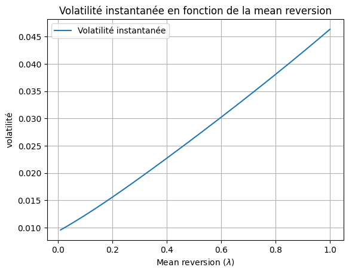
Probabilité d’atteinte de la barrière en fonction de la mean reversion
Il est à noter que ces observations faite pour la mean reversion et la probabilité d’atteinte de la barrière est inversée lorsque le modèle n’est pas recalibré pour chaque valeur de \(\lambda\).
plt.plot(lambdas, cap_mean_rev[:,1], linestyle='-', color='r', label="Probabilité de toucher la barrière")
plt.xlabel("Mean reversion ($\lambda$)")
plt.ylabel("Probabilité d'atteindre la barrière")
plt.title("Impact de la Mean Reversion sur l'Atteinte de la Barrière")
plt.grid(True)
plt.legend()
plt.show()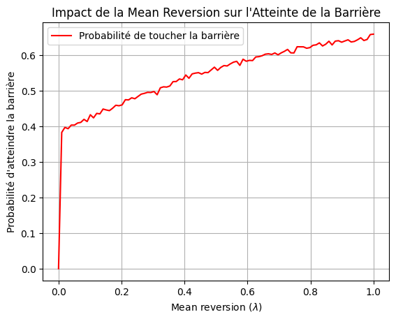
Quantitative Risk Analysis • Stochastic Modelling • Asset Pricing • Climate Analytics